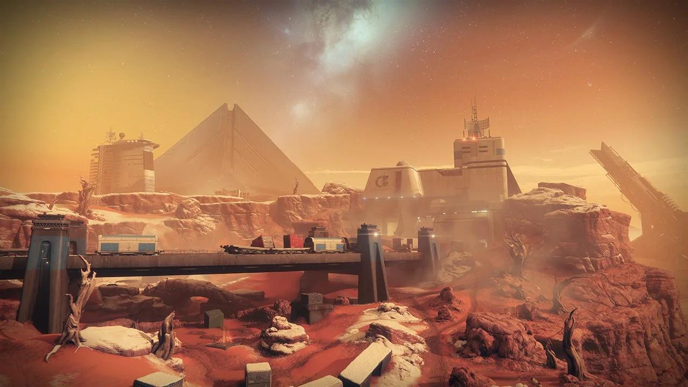
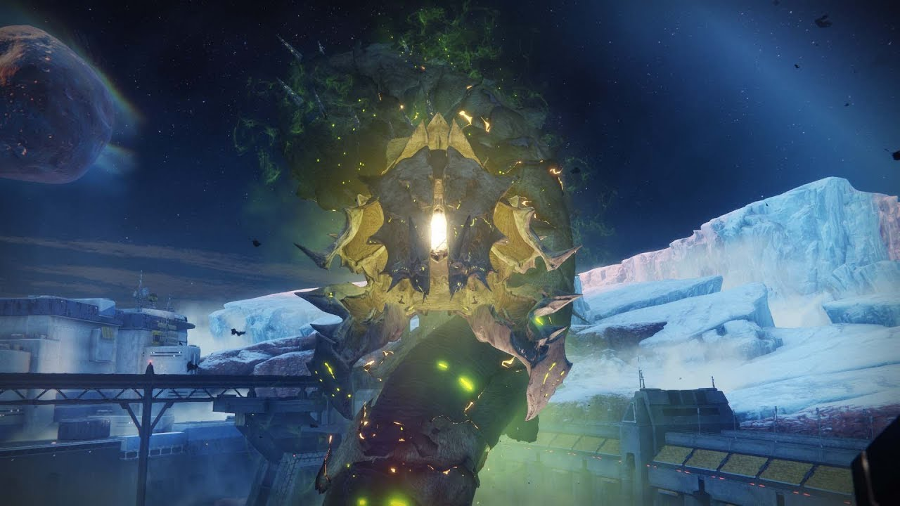

Další etapa příběhu našeho Strážce se odehrává na již navštíveném Marsu, konrétně na jeho z větší části zamrzlé části. Zde se poprvé setkáváme s ženou jménem Ana Bray, která nás na Mars pozvala kvůli neobvyklé příležitosti: Pod tajícím ledem totiž objevila lidský válečný bunkr z doby nám známé pouze jako "Zlatá doba" lidstva. Uvnitř tohoto komplexu se nacházelo mnoho úlomků historie, avšak se mezi nimi tyčilo něco zajímavějšího. V hloubkách bunkru se nacházela stvoření o kterých se dlouho tušilo, že z Marsu kompletně vymizela; stvoření Temnoty známé jako Hive. Tato skupina Hive v bunkru nepředstavovala žádnou hrozbu, přesto bylo ale zvláštní, jak se na Marsu znovu objevili. Na úplném dně bunkru ale najdeme něco ještě více neočekávaného. Umělá superinteligence nesoucí název Rasputin, tzv. Warmind, která sloužila pro obranu lidstva v Zlatých dobách naší civilizace, nyní plně při smyslech. Ale přece jen se něco změnilo. Rasputin, dříve nástroj lidmi navržený a sestavený, nyní vyhlašuje svou nezávislost na lidstvu, a rozhodnutí nás chránit učiní pouze podle svých vlastních pravidel. I přesto, že nelze považovat za spojence lidstva, nám Rasputin prozradil, že byl probuzen tím samým způsobem, jakým Ghaul zemřel. Také vysvětlil, proč zamrazil sebe, a obrovskou část Marsu. Od jeho probuzení se neúprosně snaží odvrátit hrozbu dlouho s ním pohřbenou pod ledem, která se nyní, stejně jako Rasputin, vynořuje.


Hive následují a řídí se tzv. Logikou Meče - pokud jeden z nich padne v boji, jeho smrt byla zasloužena, a podle této logiky dokáže bytost dostatečně mocná překonat nekonečno. Skupina Hive, kterou Rasputin s sebou pohřbil pod ledem Marsu, se nazývá Grasp of Nokris. Jejich vůdce, Nokris, je přímým synem nejsilnějšího z bytostí Hive - Oryx. Avšak v prastarých knihách o Oryxově potomcích není o Nokrisovi ani zmínka; Je to proto, že Nokris je podle Logiky Meče kacíř. V mladém věku se naučil umění nekromancie - vrácení života ze smrti, která je podle Logiky zasloužená a finální. Po Nokrisově boku se také nachází kosmický červ Xol. Xol je bytost doposud známá pouze Hive jako tzv. Červí Bohové. Těch existuje pouze 6, a jsou většinou Hive uctívání. Důvod, proč se Nokris, Xol a jejich skupina Hive vydali na Mars byl jednoduchý; Stát se nejmocnějšímí Hive, počínaje Marsem. Teď, když led pomalu taje, se Hive dostali zpět na povrch Marsu, a Rasputin potřebuje naší pomoc. S Rasputinovým Světlem se našemu Strážci do rukou dostanou tzv. Valkýrská kopí - jasně oranžové šípy plné Světla. Ana nezůstává daleko pozadu, její cíl na Marsu se ale liší od toho našeho. Zatímco my a náš Ghost se snaží najít a zbavit se Nokrise, což se nám nakonec podaří, Ana prohledává jednu Rasputinovu základnu za druhou, hledající informace o minulosti rodiny Bray - To jí ale zabere více planet než Mars. Eventuelně se náš Strážce, přes několik informantů Hive, i Nokrise samotného, dostane k Lokaci, kde se Xol pohybuje, a pomocí Valkýrských kopí ho jednou pro vždy skolíme. Po Xolově smrti nám Rasputin nabídne výjimečnou příležitost: Bude nadále fungovat po boku lidstva, ne ale jako nástroj, ale spojenec.